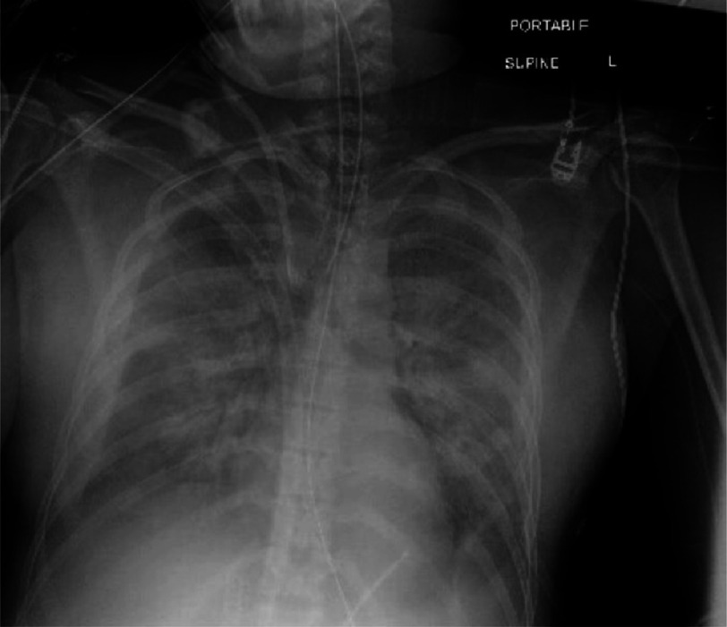
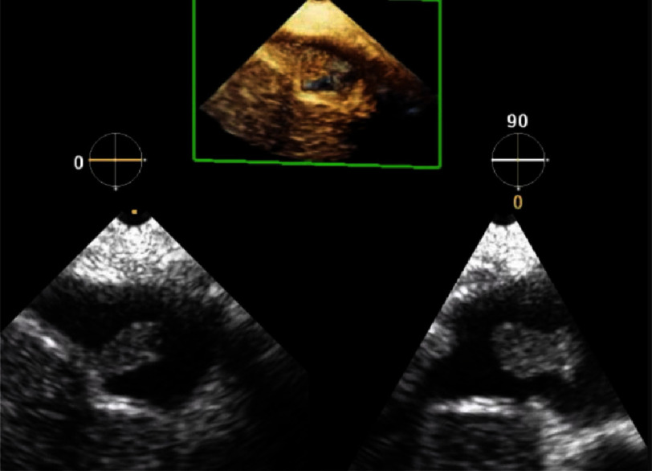
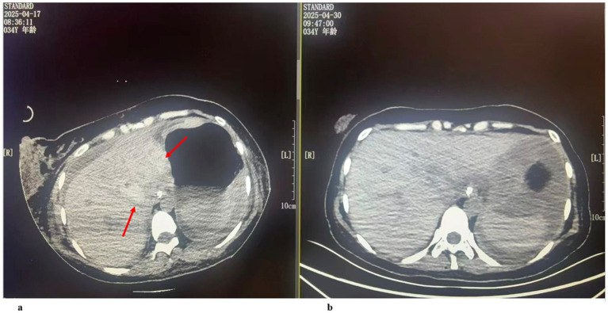

1956 — Thuyên tắc ối (amniotic fluid embolism, AFE): chẩn đoán bằng LOẠI TRỪ, hình ảnh chỉ để tìm nguyên nhân khác / Amniotic fluid embolism
Tags: pattern:soc pattern:suy-that-phai pattern:phu-phoi pattern:dong-mau-noi-mach pattern:mat-mau-o-at vung:tu-cung-phan-phu vung:phoi vung:tim-phai protocol:Xquang-nguc protocol:CTA-nguc protocol:sieu-am-tim protocol:ECMO score:4T score:shock-index
Mức chắc chắn (certainty): tổng hợp y văn (literature synthesis) — ghép đoàn hệ quốc gia Hoa Kỳ 14.684.135 ca sinh (JAMA Netw Open 2022, PMC9675004: tần suất, yếu tố nguy cơ, failure-to-rescue), khuyến cáo SMFM cập nhật 2026 (PMC13565333: tiêu chuẩn lâm sàng + checklist xử trí ban đầu), tổng quan 2025 (PMC12094319: tử vong theo thời gian, tiền sử 61% → ~10%), nghiên cứu đông máu 27 ca AFE (Sci Rep 2024, PMC10761968: tăng tiêu sợi huyết), và 3 báo cáo ca có ảnh (Front Med 2026 PMC13057527: ngừng tim + vỡ gan; Glob Cardiol Sci Pract 2024 PMC11871562: VA-ECMO; Case Rep Obstet Gynecol 2022 PMC9132692: ROTEM dẫn đường ECMO). Không có xét nghiệm khẳng định và không có hình ảnh đặc hiệu — đây là giới hạn thật của toàn bộ y văn, không phải thiếu sót của bài.
Câu chốt: AFE là chẩn đoán lâm sàng–loại trừ, đặt ra khi sản phụ sụp tuần hoàn/hô hấp trong chuyển dạ hoặc trong 30 phút sau khi bánh nhau ra, kèm DIC và không sốt, mà không có nguyên nhân nào khác giải thích được (SMFM 2026). Giá trị của CĐHA không nằm ở "thấy AFE" mà ở loại trừ thuyên tắc phổi, bóc tách động mạch chủ, chảy máu trong ổ bụng, choáng nhiễm khuẩn — và không được làm chậm hồi sức/ECMO để đi chụp.
1. Tổng quan bệnh học – cơ chế hình ảnh
1.1 Chuỗi sinh lý bệnh: ba pha trong vài phút (TẠI SAO)
- Pha 1 — co mạch phổi + suy thất phải (phút 0–30): dịch ối và mảnh tế bào thai vào tuần hoàn mẹ → hoạt hoá bổ thể, giải phóng chất trung gian → co thắt mạch phổi cấp → tăng áp phổi cấp → thất phải giãn và suy → giảm đổ đầy thất trái → tụt huyết áp, ngừng tim.
- Pha 2 — suy thất trái: thiếu máu cơ tim do giảm tưới máu vành + thiếu oxy → phù phổi cấp → giảm oxy máu nặng.
- Pha 3 — rối loạn đông máu (thường trong 30 phút đầu, có khi là biểu hiện DUY NHẤT): hoạt hoá đông máu nội mạch lan toả (DIC) + tăng tiêu sợi huyết — nghiên cứu so sánh 27 ca AFE với 12 ca nhau bong non nặng và 23 ca chứng cho thấy AFE có tPA tăng và TAFI toàn phần giảm có ý nghĩa so với cả hai nhóm, tức là có con đường tiêu sợi huyết riêng, không chỉ là DIC thông thường (PMC10761968).
- Hệ quả cho hình ảnh: phổi phù do tăng tính thấm mao mạch (không phải phù do tăng áp lực thuỷ tĩnh như suy tim trái mạn) → X-quang là mờ lan toả hai bên, đối xứng, đáy nhiều hơn, tim không to; tim phải giãn trên siêu âm tại giường; ổ bụng có thể có máu tụ dưới bao gan do DIC + tăng áp lực trong ổ bụng.
1.2 Vì sao KHÔNG có dấu hiệu hình ảnh đặc hiệu (vật lý từng phương thức)
- X-quang ngực: chỉ thấy nước trong phế nang (mờ dạng kính mờ → đông đặc) — cùng hình với phù phổi do truyền quá tải (TACO), ARDS, viêm phổi, xuất huyết phế nang. X-quang bình thường không loại trừ AFE, nhất là trong 30 phút đầu.
- Siêu âm tim (TTE/TEE): thấy hệ quả huyết động — thất phải giãn, vách liên thất đẩy sang trái (dấu D), tăng áp phổi, chức năng thất phải giảm. Đây là hình của tăng áp phổi cấp, không phải hình của AFE; thuyên tắc phổi do huyết khối cho hình y hệt.
- CT/CTA: mục đích là loại trừ huyết khối động mạch phổi (khuyết thuốc trong lòng mạch), bóc tách động mạch chủ, và tìm ổ chảy máu (máu tụ sau phúc mạc, vỡ gan/lách). AFE không tạo khuyết thuốc — mảnh ối nhỏ và phân tán, dưới ngưỡng phân giải của CT.
- Hình ảnh "khối trong buồng tim": cực hiếm, chỉ gặp khi khối ối lớn đủ lớn nằm ở nhĩ/phải; ca PMC11871562 thấy khối di động 10 × 7 mm ngay dưới tĩnh mạch gan trên siêu âm tim qua thành ngực. Thấy khối không phải tiêu chuẩn chẩn đoán; không thấy khối cũng không loại trừ — đừng để một hình đẹp làm sai đường.
1.3 Ngưỡng định lượng nằm lòng
- Tần suất: 6,0/100.000 ca sinh trong 14.684.135 ca sinh Hoa Kỳ 2016–2019 (880 ca AFE) (PMC9675004); các tổng quan dùng khoảng 2–8/100.000 (PMC12094319) — khác nhau vì tiêu chuẩn chẩn đoán không thống nhất, không phải vì bệnh thay đổi.
- Tử vong: báo cáo sớm tới 61%, số liệu gần đây ~10%; khoảng một nửa tử vong trong giờ đầu, hai phần ba trong 5 giờ; tử vong sơ sinh ~30% (PMC12094319).
- Failure-to-rescue (tử vong sau khi đã chẩn đoán AFE): 17,0% toàn nhóm; 45,8% khi AFE đi kèm ngừng tim + đông máu nội mạch (PMC9675004). Đây là con số dùng để giải thích với gia đình: chẩn đoán đúng không bảo đảm sống.
- Yếu tố nguy cơ mạnh nhất: nhau cài răng lược (placenta accreta spectrum, PAS) — aOR 10,01 (KTC 95% 7,03–14,24); thể increta/percreta aOR 17,35 (10,21–28,48) so với accreta aOR 7,62 (4,83–12,01) (PMC9675004). Kèm theo: nhau bong non, vỡ tử cung, đa ối, viêm màng ối, tiền sản giật, thai lưu, sinh mổ, thủ thuật lấy nhau bằng tay.
- Hệ quả đi kèm (aOR): đông máu nội mạch 24,68 (19,38–31,44); ngừng tim 24,56 (17,84–33,81); ARDS 10,72 (8,09–14,20) (PMC9675004).
- Cửa sổ thời gian để chẩn đoán: khởi phát trong chuyển dạ hoặc trong 30 phút sau khi bánh nhau ra; sốt là tiêu chuẩn LOẠI (nếu sốt, nghĩ nhiễm khuẩn trước) (PMC13565333).
2. Mẫu hình + chẩn đoán phân biệt theo cơ chế (Gamut)
AFE là bệnh cảnh "sụp cấp trong 30 phút quanh sinh" — gamut xếp theo cơ chế gây sụp, vì trên giường bệnh câu hỏi không phải "có AFE không" mà "còn nguyên nhân nào sửa được ngay không".
- Tắc mạch phổi – tim phải: AFE, thuyên tắc phổi do huyết khối (PE), thuyên tắc khí, thuyên tắc huyết khối ối; tất cả cho thất phải giãn + tăng áp phổi, khác nhau ở bối cảnh và tốc độ.
- Mất máu – giảm thể tích: đờ tử cung, vỡ tử cung, nhau bong non, vỡ gan/lách, máu tụ sau phúc mạc — đây là nhóm có nguồn chảy nhìn thấy trên CT/SA, và hồi sức khác hẳn (kiểm soát nguồn + truyền máu).
- Nhiễm khuẩn: sốc nhiễm khuẩn đường niệu/sinh dục, viêm màng ối — có sốt, đáp ứng kháng sinh + giải áp; AFE không sốt.
- Thần kinh – sản khoa: sản giật, hội chứng HELLP vỡ gan, xuất huyết não — có tăng huyết áp, co giật, protein niệu, hình ảnh não quyết định.
- Thuốc – phản vệ: sốc phản vệ, ngộ độc thuốc tê tại chỗ (LAST), tác dụng phụ magnesium, phản ứng truyền máu — có thuốc/dị nguyên khởi phát, đáp ứng adrenaline.
- Tim – mạch: bóc tách động mạch chủ, nhồi máu cơ tim, rối loạn nhịp, bệnh van tim — CTA/ECG chốt.
Gợi nhớ "SHE-CAN'T" cho sụp quanh sinh: Sepsis, Hemorrhage, Embolism (AFE/PE/khí), Cardiac (NMCT/bóc tách/rối loạn nhịp), Anaphylaxis, Neuro (sản giật/xuất huyết não), Toxicity (LAST/magnesium).
3. Bảng so sánh phân biệt (ma trận đối chiếu)
| Thực thể (entity) | Hình ảnh điển hình | Chốt vào (rule-in) | Chốt loại (rule-out) | Gợi ý xác nhận |
|---|---|---|---|---|
| AFE | X-quang: mờ lan toả hai bên kiểu phù phổi, tim không to; SA tim: thất phải giãn + dấu D, tăng áp phổi; CTA không có khuyết thuốc; CT bụng có thể có máu tụ do DIC | Sụp trong 30 phút quanh sinh + DIC + KHÔNG sốt + không nguyên nhân khác (tiêu chuẩn lâm sàng) | Không có hình ảnh nào loại trừ được; X-quang bình thường không loại trừ | Chẩn đoán loại trừ; theo dõi fibrinogen/ROTEM; điều trị hỗ trợ |
| Thuyên tắc phổi (PE) | CTA: khuyết thuốc lòng mạch hình nhánh cây; thất phải giãn nếu tắc lớn | Khuyết thuốc trong động mạch phổi trên CTA | CTA âm tính chất lượng tốt + D-dimer thấp | CTA ngực (nếu huyết động cho phép), siêu âm tim |
| Mất máu ồ ạt (đờ tử cung/vỡ tử cung/vỡ gan) | CT: ổ máu tụ, máu tự do, thoát mạch ≥ 100 HU thì động mạch; X-quang phổi sạch giai đoạn đầu | Nguồn chảy thấy được + đáp ứng với truyền máu/kiểm soát nguồn | Không có ổ dịch/máu tự do + Hb ổn định sau bù | CT bụng cản quang, SA tại giường, bóng chèn/UAE |
| Sốc nhiễm khuẩn sản khoa | CT: ổ nhiễm, khí trong mô, dịch; X-quang có thể có đông đặc khu trú | Sốt + ổ nhiễm + cấy dương + đáp ứng kháng sinh | Không sốt, không ổ nhiễm, lactate giảm sau hồi sức | Cấy máu/dịch ối, procalcitonin, CT bụng–chậu |
| Sản giật / HELLP | MRI não: PRES (T2/FLAIR tăng đối xứng vùng chẩm–đỉnh); CT gan: máu tụ dưới bao | Tăng huyết áp + co giật + protein niệu/tiểu cầu giảm | Huyết áp bình thường, không protein niệu | MRI sọ, xét nghiệm gan–thận–huyết học |
| Thuyên tắc khí | CT: khí trong buồng tim/thất phải hoặc tĩnh mạch; X-quang ít giá trị | Khí thấy trong tim/tĩnh mạch lớn + bối cảnh (truyền, mổ) | Không thấy khí + không bối cảnh | CT ngực, SA tim; nằm đầu thấp, 100% O₂ |
| LAST / phản vệ | Hình ảnh bình thường hoặc phù phổi sau hồi sức | Thuốc tê/dị nguyên + ban, co thắt phế quản, đáp ứng adrenaline | Không phơi nhiễm + không đáp ứng | Lâm sàng; tryptase (phản vệ) |

X-quang ngực thẳng tại giường (tư thế nằm ngửa) ở ca AFE sau sinh đường âm đạo, có VA-ECMO: mờ lan toả hai bên kiểu phù phổi. Đây là hình hệ quả, không phải hình chẩn đoán — cùng hình với TACO, ARDS, viêm phổi. Nguồn: Glob Cardiol Sci Pract 2024 (PMC11871562), CC BY 4.0.4. Protocol + tiêu chuẩn chẩn đoán + quyết định
4.1 Tiêu chuẩn lâm sàng (thay cho "tiêu chuẩn hình ảnh")
- Sụp tuần hoàn hoặc hô hấp (ngừng tim, tụt huyết áp kèm suy hô hấp) trong chuyển dạ hoặc trong 30 phút sau khi bánh nhau ra.
- Đông máu nội mạch lan toả (chảy máu không cầm, fibrinogen giảm nhanh, tiểu cầu giảm).
- Không sốt.
- Không có nguyên nhân khác giải thích được (sau khi loại trừ PE, chảy máu, sản giật, phản vệ, nhiễm khuẩn).
Nguồn: SMFM Special Statement cập nhật 2026 (PMC13565333); bộ tiêu chuẩn gốc Clark–Hankins.
4.2 Trình tự hình ảnh (chỉ sau khi đã bắt đầu hồi sức)
- Bước 0 — không chờ hình ảnh: gọi ê-kíp sản–gây mê–hồi sức, CPR chất lượng cao + đẩy tử cung sang trái, mổ lấy thai trong 4 phút nếu ngừng tim và thai ≥ 23 tuần (resuscitative hysterotomy).
- Bước 1 — X-quang ngực tại giường (1 phim, tư thế nằm): phân biệt phù phổi với phổi sạch; không dùng để chẩn đoán AFE.
- Bước 2 — siêu âm tim tại giường (TTE, hoặc TEE nếu đã gây mê): tìm thất phải giãn/dấu D, chức năng thất trái, khối trong buồng tim, tràn dịch màng tim. Siêu âm trả lời được trong 2–3 phút và không cần di chuyển bệnh nhân.
- Bước 3 — CTA ngực (± bụng–chậu) chỉ khi huyết động tạm ổn và PE/bóc tách còn là câu hỏi thật: khuyết thuốc = PE; không khuyết thuốc không loại trừ AFE; tìm máu tụ sau phúc mạc, vỡ gan.
- Bước 4 — CT/MRI sọ khi có dấu hiệu thần kinh sau hồi sức (tiên lượng thần kinh, PRES, xuất huyết).
- Bước 5 — ECMO khi suy tuần hoàn/hô hấp không đáp ứng: VA-ECMO cho suy tim; VV-ECMO cho suy hô hấp đơn thuần. Ca PMC11871562 và PMC13057527 sống sót nhờ ECMO; ca PMC9132692 dùng ROTEM để quyết định có/không kháng đông trong ECMO vì bệnh nhân đã DIC nặng.
flowchart TD
A[Sản phụ sụp tuần hoàn hoặc hô hấp trong chuyển dạ hay trong 30 phút sau sinh] --> B[CPR + đẩy tử cung sang trái + gọi ê-kíp]
B --> C{Có sốt hoặc ổ nhiễm rõ?}
C -->|Có| D[Nghĩ sốc nhiễm khuẩn: cấy + kháng sinh trong 1 giờ]
C -->|Không| E{Có nguồn chảy máu thấy được?}
E -->|Có| F[Kiểm soát nguồn: bóng chèn, UAE, mổ + truyền máu khối lượng lớn]
E -->|Không| G[X-quang ngực + siêu âm tim tại giường]
G --> H{Thất phải giãn hoặc tăng áp phổi?}
H -->|Có| I[CTA ngực nếu huyết động cho phép: tìm khuyết thuốc]
H -->|Không| J[Tìm sản giật, phản vệ, LAST, NMCT, bóc tách]
I --> K{Khuyết thuốc trong động mạch phổi?}
K -->|Có| L[PE: kháng đông hoặc tiêu sợi huyết theo chỉ định]
K -->|Không| M[AFE là chẩn đoán loại trừ: hỗ trợ + DIC + cân nhắc ECMO]
M --> N{Suy tuần hoàn hoặc hô hấp không đáp ứng?}
N -->|Có| O[VA-ECMO hoặc VV-ECMO; ROTEM dẫn đường kháng đông]
N -->|Không| P[Theo dõi fibrinogen, tiểu cầu, thần kinh sau hồi sức]
4.3 Điều trị hỗ trợ — những gì hình ảnh không thay được
- Đường thở + thông khí: oxy 100% giai đoạn đầu; đặt nội khí quản sớm nếu hôn mê/suy hô hấp.
- Tuần hoàn: adrenaline theo ACLS; norepinephrine duy trì huyết áp; tránh thuốc gây giãn mạch phổi không chọn lọc khi chưa có siêu âm tim.
- Đờ tử cung đi kèm (rất thường gặp): oxytocin, carboprost, misoprostol theo phác đồ; TXA 1 g trong 3 giờ (bài 1932).
- Đông máu: bù fibrinogen theo ngưỡng < 2 g/L (bài 1932); theo dõi bằng ROTEM/TEG khi có; không truyền tiểu cầu dự phòng nếu không chảy máu.
- Sau hồi sức: theo dõi di chứng thần kinh (thiếu oxy não) và suy tim; tư vấn thai kỳ sau — nguy cơ tái phát chưa rõ, không đủ dữ liệu để khuyên mổ lấy thai chủ động (PMC12094319).
5. Biến thể bình thường và cạm bẫy
- X-quang bình thường trong 30 phút đầu là chuyện thường — không loại trừ AFE; đừng "chờ phim sạch rồi yên tâm".
- Phù phổi hai bên sau sinh = TACO là cạm bẫy hay gặp: bệnh nhân vừa nhận dịch/oxytocin/truyền máu → tim to, tĩnh mạch cổ nổi, đáp ứng lợi tiểu; AFE có thất phải giãn + DIC + không sốt. Siêu âm tim phân biệt trong 2 phút.
- Thất phải giãn ≠ PE: cả hai đều giãn; CTA là thứ phân biệt, nhưng đừng chụp khi huyết động chưa ổn — nguy cơ ngừng tim trên bàn chụp cao hơn lợi ích.
- Nhầm "không sốt" với "không nhiễm khuẩn": sản phụ sốc có thể hạ thân nhiệt; cấy máu + lactate + đáp ứng kháng sinh mới là bằng chứng.
- Bỏ sót vỡ gan/lách: đau vai, thiếu máu không giải thích, bụng chướng sau hồi sức → CT bụng cản quang; ca PMC13057527 vỡ gan chỉ phát hiện khi mở bụng.
- Sai số đo trên X-quang tại giường: phim nằm ngửa làm rốn phổi rộng giả, mờ đáy do tràn dịch lượng nhỏ; so với phim trước và đọc cùng siêu âm phổi.
- Ảnh hưởng của ECMO: cannula và màng ECMO tạo mờ/đường ống trên phim, dễ đọc nhầm là khí trong trung thất; đối chiếu vị trí cannula.
- Sai lầm hệ thống hay gặp nhất: dành 20 phút cho chẩn đoán phân biệt trong khi cửa sổ sống là 60 phút đầu — hồi sức và chuẩn bị ECMO phải chạy song song với chẩn đoán.
6. Tự lượng giá — Blind Quiz
Ca 1 — Sản phụ 29 tuổi, sau sinh đường âm đạo 30 phút thì khó thở, tím, tụt huyết áp. Nhìn phim trước, mô tả trước.
- Gợi ý lâm sàng: không sốt, không chảy máu âm đạo rõ, fibrinogen tụt nhanh.
- Câu hỏi: Mô tả mờ phổi? Tim có to không? Ba chẩn đoán phân biệt hàng đầu và một thăm khám phân biệt trong 2 phút?
Bấm để hiện đáp án (findings + chẩn đoán)
- Findings: mờ lan toả hai bên, đối xứng, đáy nhiều hơn, tim không to, nhiều đường truyền và ống (bệnh nhân đang ECMO).
- Chẩn đoán: phù phổi cấp trong AFE (tiêu chuẩn lâm sàng: sụp trong 30 phút sau sinh + DIC + không sốt).
- Phân biệt: TACO (tim to, đáp ứng lợi tiểu), ARDS (khởi phát chậm hơn, không DIC sớm), viêm phổi (đông đặc khu trú, sốt), PE (CTA khuyết thuốc). Siêu âm tim tại giường là thăm khám phân biệt nhanh nhất.
- Nguồn ảnh: Glob Cardiol Sci Pract 2024 (PMC11871562), CC BY 4.0.
Ca 2 — Cùng bệnh nhân, siêu âm tim trong lúc hồi sức:

- Câu hỏi: Cấu trúc trong buồng tim là gì? Nó có phải tiêu chuẩn chẩn đoán AFE không?
Bấm để hiện đáp án
- Findings: khối di động trong buồng tim phải (nhĩ/thất phải), thấy rõ trên TEE 2 bình diện và dựng hình 3D.
- Ý nghĩa: đây là mảnh ối/huyết khối ối nhìn thấy được — cực hiếm (khối 10 × 7 mm trong ca này). Không phải tiêu chuẩn chẩn đoán; đa số ca AFE không thấy khối, và thấy khối không chứng minh AFE (huyết khối thông thường cũng cho hình này).
- Giá trị thực dụng: khối lớn trong tim phải giải thích tắc nghẽn cơ học và củng cố chỉ định ECMO/phẫu thuật lấy khối nếu tắc nghẽn nặng.
- Nguồn ảnh: Glob Cardiol Sci Pract 2024 (PMC11871562), CC BY 4.0.
Ca 3 — Sản phụ 34 tuổi, 40 tuần 2 ngày, chuyển dạ: nhịp tim thai tụt đột ngột, sau đó sùi bọt hồng và hôn mê. Mổ lấy thai cấp, sau mổ chảy máu ồ ạt, ngừng tim lặp lại. CT bụng dưới đây:

- Câu hỏi: Hai mũi tên đỏ chỉ gì? Vì sao bệnh nhân AFE lại có tổn thương này? Nó thay đổi xử trí thế nào?
Bấm để hiện đáp án
- Findings: (a) ngày 5 sau mổ — máu tụ/dập gan dưới bao gan (mũi tên), có dịch quanh gan; (b) ngày 18 — ổ máu tụ thu nhỏ, gan hồi phục.
- Cơ chế: DIC + tăng áp lực trong ổ bụng + co mạch do sốc → vỡ gan tự phát, biến chứng được mô tả ở thai kỳ có tăng huyết áp/HELLP nhưng ca này không có tiền sử tăng huyết áp, tiền sản giật hay HELLP.
- Xử trí: chảy máu gan là nguồn chảy phải kiểm soát (chèn, nút mạch, mổ) song song với hồi sức AFE — không được quy mọi tụt huyết áp cho "AFE" mà bỏ qua ổ chảy.
- Nguồn ảnh: Front Med 2026 (PMC13057527), CC BY 4.0.
Bài liên quan chéo
- 500 – Tổng quan Vú & Sản phụ khoa
- 1932 – Truyền máu khối lượng lớn & rối loạn đông máu trong PPH (ngưỡng fibrinogen, TXA, ROTEM)
- 1927 – Thắt động mạch tử cung & động mạch chậu trong (kiểm soát nguồn chảy)
- 1728 – Chảy máu sau vỡ tử cung (CT cản quang tìm thoát mạch)
- 1957 – Hoại tử vỏ thận sau băng huyết sau sinh (biến chứng thận của cùng bệnh cảnh)
- 070 – Thuyên tắc phổi cấp (khuyết thuốc trên CTA — hàng phân biệt số 1)
Ảnh
1956_thuyen-tac-oi_XR_GCSP-PMC11871562.jpg— X-quang ngực, PMC11871562, CC BY 4.0.1956_thuyen-tac-oi_TEE_GCSP-PMC11871562.jpg— siêu âm tim qua thực quản, PMC11871562, CC BY 4.0.1956_thuyen-tac-oi_CT_FrontMed-PMC13057527.jpg— CT bụng, PMC13057527, CC BY 4.0.- Nguồn + giấy phép từng ảnh:
images/CREDITS.md; nguồn bài:sources.md.
Không dùng để chẩn đoán độc lập khi chưa có người hướng dẫn.